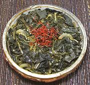

|
Aster Scaber NamulKorea - Chwinamul | ||||
| Makes: Effort: Sched: DoAhead: |
9-3/4 oz ** 1 day Yes |
Aster Scaber is a favorite spring vegetable in Korea, often used to make namul (seasoned vegetable) for use as a Banchan (small side dish). Most of the year, and always in North America, it can only be had dried. It is similar to a Spinach namul, but milder. | |||
|
7-1/2 2-1/2 2 1 3 1/2 2 1 1/2 |
oz oz cl T T T T t T |
Aster Scaber (1) Onion Garlic Oil Soy Sauce Honey Water Sesame Oil, dark Sesame, toasted (3) |
Make - (20 min + 12 hrs for dried stems)
|